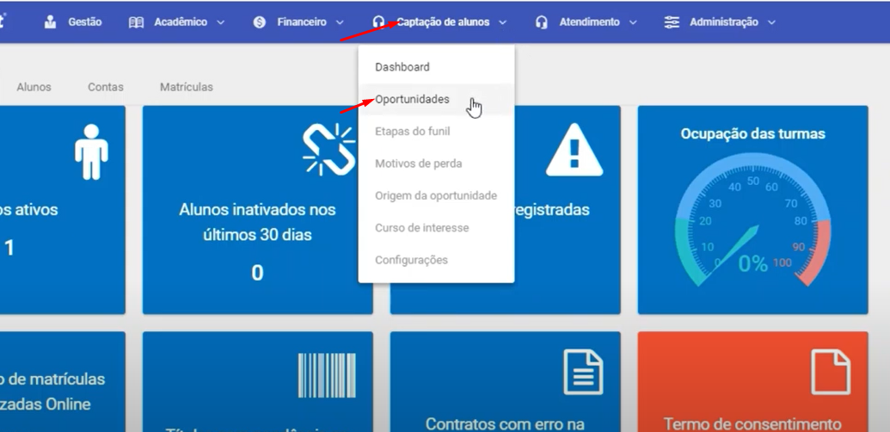
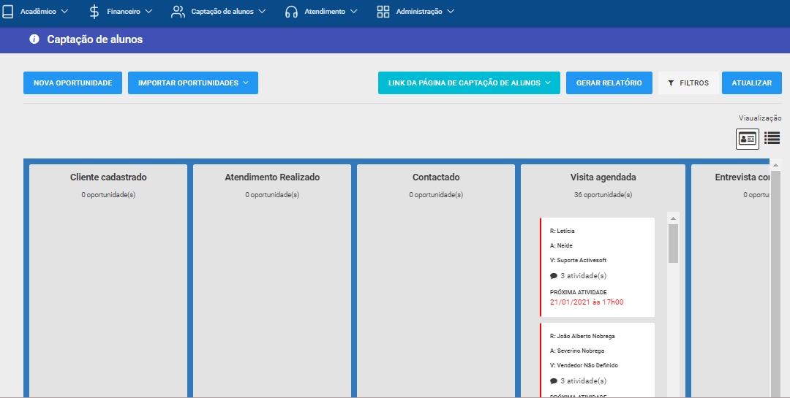
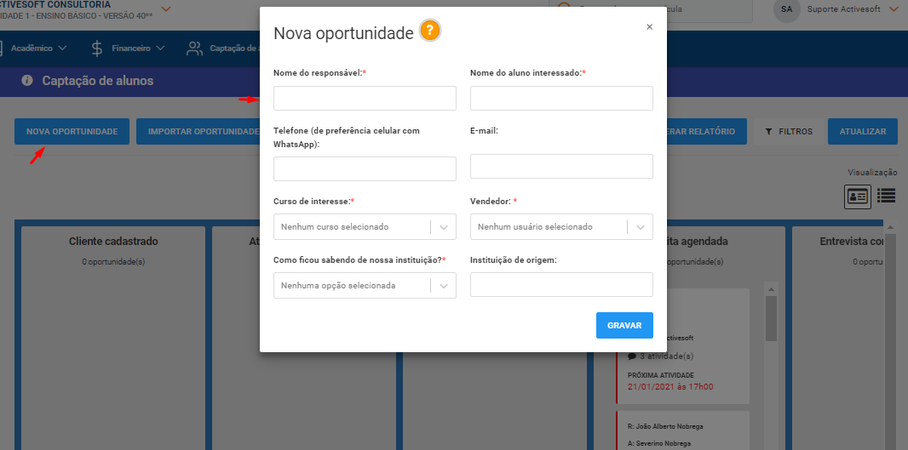
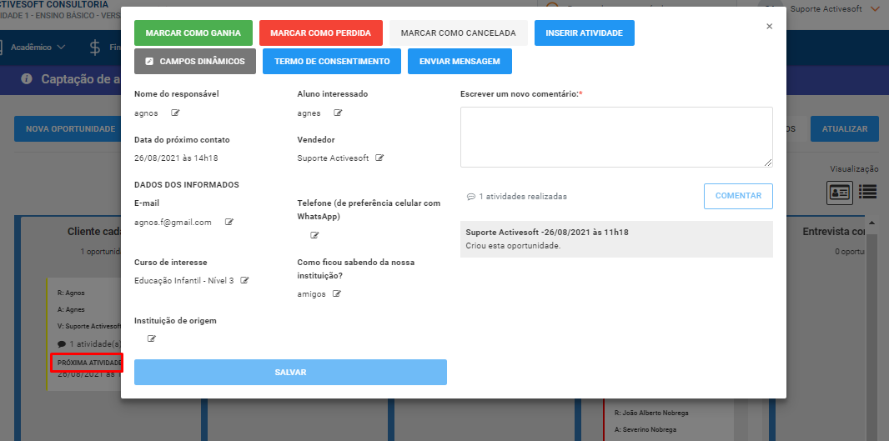
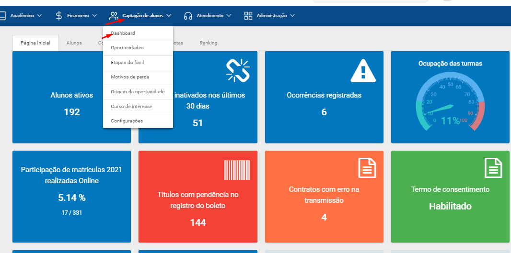
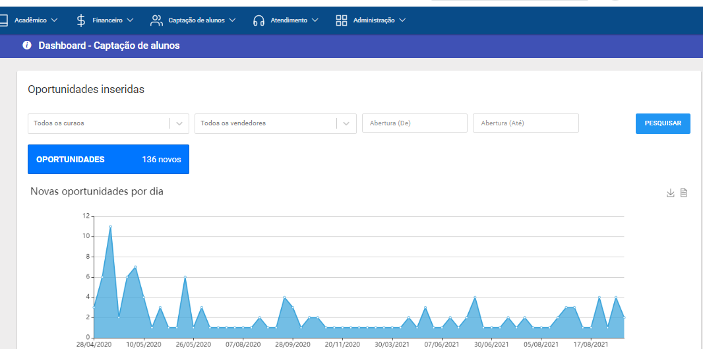

Nessa opçao você consegue cadastrar no sistema possíveis oportunidades de matrícula.
Aqui desse ser cadastrados todos os alunos, responsaveis que você identifica como principal oportunidade de
matricula na sua escola e o seu gerenciamento. Esse é o objsetivo principal.
Após cadastrar a oportunidade, em negrito tem escrito proxima ativade. Nessa opção você vai definir o proximo passo para esse possível cliente.




video demonstrativo/Configuraçoes
Veja como analisar o Dashboard


video demonstrativo/Configuraçoes